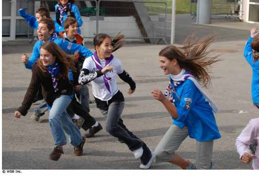

Capturar el Dióxido de Carbono

Finalidad 2
Los Scouts trabajan por un mundo en el que el riesgo porsustancias dañinas sobre la gente y el medio ambiente sea minimizado.
Objetivos educativos: Ser conscientes de las sustancias dañinas en el medio ambiente local.Explicar maneras para reducir el riesgo por sustancias dañinas sobre las personas, plantas y animales.
Edad: Menores de 11 años
Resumen: Actividad entretenida para presentar el cambio climático
Objetivo: Aprender la ciencia básica detrás del cambio climático.
Materiales y equipo: Vendas para los ojos.
Preparación: Ninguna.
Duración: 15 minutos a media hora
Lugar: Lugar de reuniones Scout.
Antecedentes: Nuestro planeta está rodeado por una capa de gases. Ésta es nuestra atmósfera. Al brillar el sol sobre la tierra, recibimos calor. Un poco de este calor es absorbido por la superficie de la tierra y otro poco rebota de regreso a la atmósfera el calor reflejado queda atrapado en la atmósfera y mantiene nuestro planeta caliente. Esto se conoce como efecto invernadero.
La capa de gases se hace más gruesa pues lanzamos hacia la atmósfera gases de invernadero al quemar combustibles fósiles para obtener energía y al talar los bosques para la agricultura.
Los gases de invernadero son dióxido de carbono (CO2), metano y óxido nitroso. Al ser más gruesa la capa, la temperatura aumenta. Como resultado de esto, nuestro clima está comenzando a cambiar.
Guía paso a paso de la actividad
1. Divida al grupo en dos equipos. Un equipo será los árboles y el otro las moléculas de dióxido de carbono. Debe haber más moléculas de dióxido de carbono que árboles.2. Pida a los árboles encontrar una lugar para crecer con bastante espacio entre sí. Una vez que los árboles han escogido su lugar para crecer no se pueden mover, sólo sus ramas (brazos). Como son árboles en crecimiento, necesitan atrapar dióxido de carbono. Ellos hacen esto con sus ramas y hojas. Pida a los árboles practicar cómo atrapar el dióxido de carbono (deben mover sus brazos).
3. Las moléculas de dióxido de carbono se encuentran flotando alrededor. Pueden moverse muy rápido pero no pueden ver a dónde van (vendar los ojos de las moléculas de dióxido de carbono). Las moléculas de dióxido de carbono tienen que moverse de un lado a otro en el área de juego sin ser capturados. Los árboles tienen que tratar de atraparlas con sus ramas. Una molécula de dióxido de carbono es atrapada si es tocada por un árbol, entonces se convierte en árbol.
4. Continúe con el juego hasta que casi todas las moléculas de dióxido de carbono desaparezcan, entonces deténgalos y anuncie que los humanos han descubierto el bosque y quieren talar los árboles para obtener madera y cultivar el suelo. Los árboles se queman y el dióxido de carbono es liberado. Elija tres cuartas partes de los árboles y cámbielos a moléculas de dióxido de carbono.
Después de un tiempo, la tierra se vuelve inservible para cultivar, en vez de ello, se decide construir una ciudad. En la ciudad hay muchas fábricas y automóviles. Estos queman combustible que libera más dióxido de carbono hacia la atmósfera. Elija a la mitad de los árboles restantes y cámbielos a moléculas de dióxido de carbono.
5. El escenario puede entonces ser cambiado para que los Scouts lleguen y siembren plantas y más árboles (cambie algunas de las moléculas de dióxido de carbono a árboles).
Evaluación
1. Después, discuta el juego usando las siguientes ideas.
En el juego, ¿qué efecto tiene el número de árboles sobre las moléculas de dióxido de carbono? ¿Esto ocurre también en la vida real?
A mitad del juego llegaron los humanos y cortaron muchos árboles. ¿Qué efectos tuvo esto? (pensar en términos de mediano y largo plazo)
¿Qué efecto tuvo la plantación de árboles que hicieron los Scouts sobre las moléculas de dióxido de carbono? ¿Qué importancia tiene la cantidad de dióxido de carbono en la atmósfera?
Explique el efecto invernadero. ¿Cómo podemos reducir la cantidad de dióxido de carbono en le atmósfera?
Actividades avanzadas
1. Pida a los Scouts pensar sobre cómo sus acciones diarias pueden afectar el cambio climático. ¿qué pueden hacer para reducir la cantidad de gases de efecto invernadero que producen?.
© World Scout Bureau
Rue du Pré-Jérôme 5
PO Box 91
1211 Geneva 4 Plainpalais
Switzerland
Tel.: (+ 41 22) 705 10 10
Fax: (+ 41 22) 705 10 20
worldbureau@scout.org
scout.org
Reproduction is authorized to National Scout
Organizations and Associations which are
members of the World Organization of the Scout
Rue du Pré-Jérôme 5
PO Box 91
1211 Geneva 4 Plainpalais
Switzerland
Tel.: (+ 41 22) 705 10 10
Fax: (+ 41 22) 705 10 20
worldbureau@scout.org
scout.org
Reproduction is authorized to National Scout
Organizations and Associations which are
members of the World Organization of the Scout